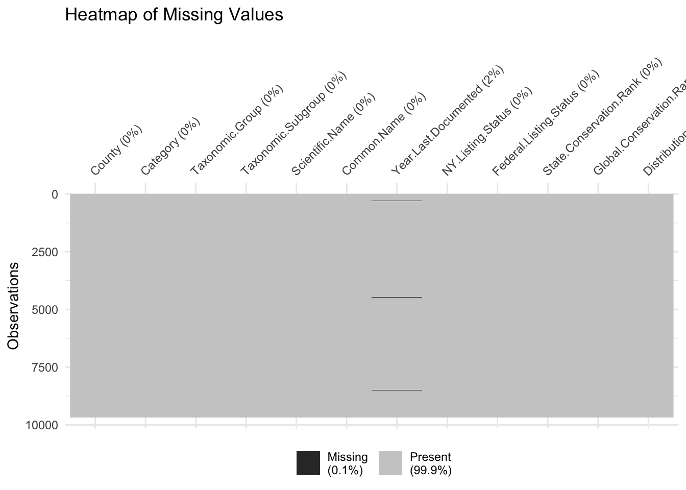

Code
birds_data <- read.csv("birds(1).csv", stringsAsFactors = FALSE)
# head(birds_data)birds_data <- read.csv("birds(1).csv", stringsAsFactors = FALSE)
# head(birds_data)We are using a bird sightings of New York state dataset originating from eBird.org, a platform collecting bird observation data submitted by citizen scientists, birdwatchers, and researchers. Providing details about bird species, locations, and specific and detailed characteristics. The website also states clearly that the data is curated and reviewed for accuracy before being made publicly available. The dataset is in CSV format and contains 9,678 rows and 12 columns. It includes 12 key variables, including county, category, taxonomic group and subgroup, scientific name and common name, year last documented, NY listing status, federal listing status, state and global conservation ranks, and distribution status. The updates are not explicitly stated on the website, but it is likely that the dataset is updated periodically, depending on new observations and reviews. Although this dataset does not have any missing value, it has some “not available” values in some columns, so we need to preprocess to deal with that. In addition, some sightings might be outdated, so we should consider deleting them. Lastly, we have imported the dataset using read.csv() in RStudio.
# check for missing values in each column
# colSums(is.na(birds_data))Although there’s no missing data, we found that in the “Year.Last.Documented” column, we have “not available” values. Therefore, we are going to treat these values as useless missing values.
library(ggplot2)
library(dplyr)
Attaching package: 'dplyr'The following objects are masked from 'package:stats':
filter, lagThe following objects are masked from 'package:base':
intersect, setdiff, setequal, unionlibrary(naniar)
# replace these values with missing values
birds_data <- birds_data |>
mutate(Year.Last.Documented = ifelse(Year.Last.Documented == "not available", NA, Year.Last.Documented))
# calculate percentage of missing values for each column
missing_summary <- data.frame(
Column = names(birds_data),
MissingPercent = colSums(is.na(birds_data)) / nrow(birds_data) * 100)
# bar chart
ggplot(missing_summary, aes(x = Column, y = MissingPercent)) +
geom_bar(stat = "identity", fill = "steelblue") +
labs(title = "Percentage of Missing Values by Column", x = "Columns", y = "Percentage Missing (%)") +
theme(axis.text.x = element_text(angle = 45, hjust = 1))
# heatmap
vis_miss(birds_data) +
labs(title = "Heatmap of Missing Values")
As we can see from the bar chart and the heatmap, we can see that approximately 2% of the values in “year last documented” are not available. This could possibly affect our anlysis of the temporal patterns of trends in birds documentation. We should consider using imputation methods to deal with “not available” data in this column.